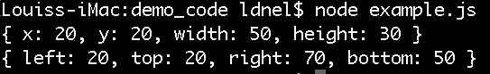
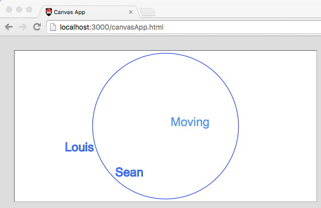
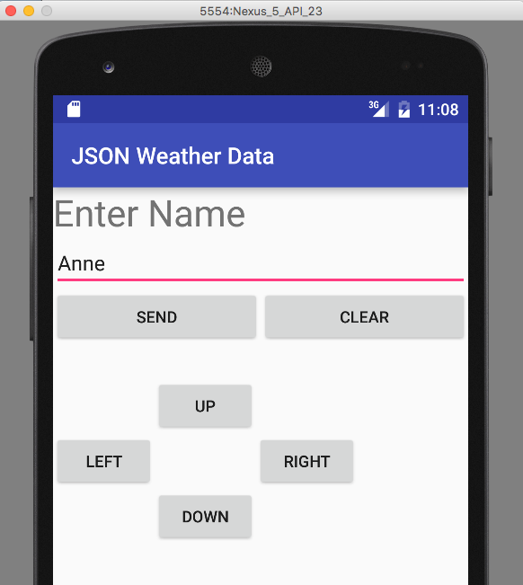
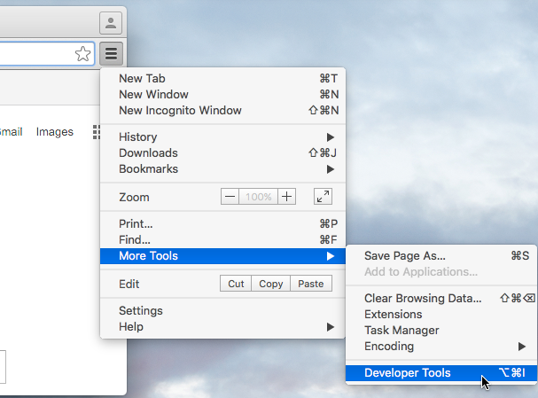
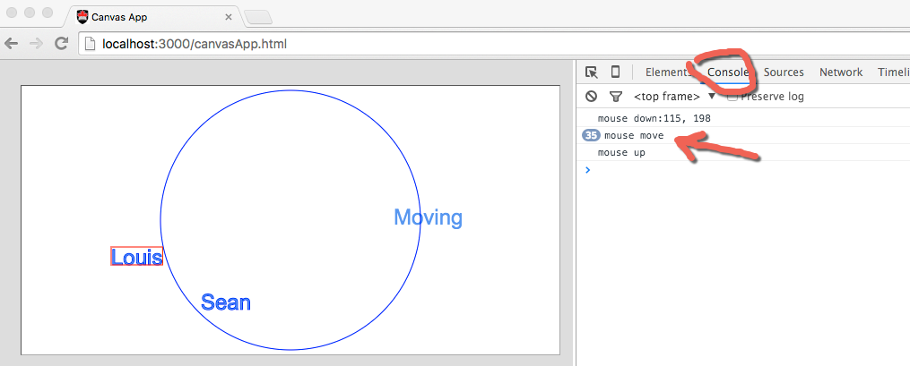

COMP 2601 Winter 2016
Ex 09 Javascript Basics
© L.D. Nel 2016
Revisions -none yet
Rev1: note about needing to demo this weeks exercises this week.
Description:
[rev 1: This week's exercises must be completed, and demo'ed during this week's class times. There will not be an opportunity to demo them a week later.]
The purpose of this exercise is to review, or introduce, javascript basics like objects and functions.
The servers we build to implement REST-like API's will be built in javascript (using the node.js environment). Also, we will sometimes use javascript browser-based apps in conjunction with mobile device apps (e.g. android, ios). Thus some working knowledge of javascript is necessary. Actually browser-based javascript apps are direct competitors of mobile apps so it is good to know how to work with them.
IMPORTANT: For this class exercise you will need Node.js installed on your computer.
You need to demonstrate your exercise to the TA or Prof. before you leave the class to get credit for it. Marks: 2 or completion, 1 for partial progress, 0 for no show or no progress. (A mark of 1 can be upgraded to 2 is show us your completed work within one week of this exercise.)
Instructions:
Background:
We will again be using the server from last week that supports the following API.
HTTP GET
/add?word=Bird
/move?word=Bird&direction=right [also left, up, down]
/pollData
HTTP PUT, POST:
/add
JSON message body: {word:Bird}
/move
JSON message body: {word:Bird,direction:right}
/pollData
JSON message body: {}
All of these API methods respond back to the client with a JSON string representing an array of all the current words and their locations.
Problem 1 -Javascript Literal Objects
Locate the file example.js in the demo code folder. Open a it with a text editor. It should look like the following.
/*
Example Javascript
*/
var rect1 = {x: 20, y:20, width: 50, height: 30};
var rect2 = {left: 20, top: 20, right: 70, bottom: 50};
console.log(rect1);
console.log(rect2);
It defines two rectangle objects (in two popular formats) as javascript literal objects.
Open a terminal window at the location of example.js and execute:
node example.js
You should see the output on the console:

Some observations:
1) Variables should be declared with var. (If you don't they become global variables and cause problems.)
2) Variables have no type and objects have no type other than being objects.
Add the following code to the file and re-run the code:
//exploring objects for(k in rect1) console.log(k); for(k in rect1) console.log(rect1[k]); for(k in rect1) console.log(k + ": " + rect1[k]); for(k in rect1) console.log(typeof k + ": " + typeof rect1[k]);
Notice that objects are key-value pairs and that it is easy to explore (and debug) them using the for-in loops.
Problem 2 -Javascript Functions
Add the following code to the example.js file
function contains(rect, point){
//answer whether rect contains point
return rect.left <= point.x &&
rect.right >= point.x &&
rect.top <= point.y &&
rect.bottom >= point.y;
}
var pt = {x:30,y:40};
console.log(contains(rect2, pt));
Rerun the code and see the result. Some observations:
1) Functions have no return type and the parameters are not typed. Javascript relies entirely on the choice of good variable and function names. Functions can also be anonymous and simply referred to through variables. For example the following would also work:
var f= function(rect, point){
//answer whether rect contains point
return rect.left <= point.x &&
rect.right >= point.x &&
rect.top <= point.y &&
rect.bottom >= point.y;
}
var pt = {x:30,y:40};
console.log(f(rect2, pt));
2) Replace the first implementation of the function with the following (the expression being returned is now on a new line).
function contains(rect, point){
//answer whether rect contains point
return
rect.left <= point.x &&
rect.right >= point.x &&
rect.top <= point.y &&
rect.bottom >= point.y;
}
Re-run the code and see what happens -the function no longer returns a boolean result. What just happened?
Javascript, in an effort to be helpful, will insert a semicolon where it "thinks" you might have forgotten one. Specifically it compiled the code as:
function contains(rect, point){
//answer whether rect contains point
return;
rect.left <= point.x &&
rect.right >= point.x &&
rect.top <= point.y &&
rect.bottom >= point.y;
}
but does not bother to warn you that the expression is now also unreachable. Javascript does some things very well -like closures and first class functions and that's why it gets invited to all the parties. But when it's at those parties it flutters around like a social moth sprinkling everyone with semicolons!
Problem 3 -Running On Localhost
Here we want to launch our word server from last week, a browser javascript app, and the android app running on a AVD (android virtual device).
Locate the node.js jsonServer.js file in the demo code. Open a terminal window at that location and launch the server by executing node jsonServer.js. The server is now listening for HTTP requests.
Open a browser and visit server at http://localhost:3000/canvasApp.html and it should launch the app displaying some words and a moving word.

Finally open the android studio project JSON client HTTP GET. Start a virtual device and then launch the app on the virtual device. (Note for this exercise it must be a virtual device. Your real device will not work with localhost.) Also notice in the android MainActivity.java the app visits http://10.0.2.2:3000. Localhost on the AVD would refer to the AVD itself and we don't want that. The special IP address 10.0.2.2 refers to the localhost of the machine hosting the AVD which is what we want. (If you do want to use your real device you can host your server via the classroom router as we did in the previous exercise.)

Now that you have these three pieces up and running test the app by adding a few words using the AVD and moving them around.
Problem 4 -Deflecting Words
Finally we get to the main objective. We want to modify the javacript in the browser app canvasApp.js so that the moving word will deflect off the other words as well as the canvas walls. Here is what you need to do.
1) Observe in the canvasApp.js code that you can use the canvas graphics context to measure the width of the words in the current font. (The height of the words is estimated and reflected in a variable named wordHeight.)
2) Study how the moving word is deflected off the canvas boundary "walls" in the timer event handler.
3) In the timer event handler you could loop through the words and see if the moving string has collided with one and, if so, change its direction of travel appropriately. Here is a suggestion:
Define a javascript function intersects(rect1, rect2) that returns whether two rectangles are intersecting. Create a rectangle representing the moving string and on representing the target word and use the function to see if they have collided. If so, change the direction of the moving string approriately.
When you have completed this you should see the moving word deflect not only off the walls but also off the other words. Use your android AVD to "kick the moving string around".
Output-ing information to the console (like in problem 1) can be very helpful for debugging your javascript. When running in a browser you can still do the same and it will show up on the broswer console if you are displaying its development tools. In Chrome for example you can access the developer options by as shown below.

You will then be able to do console style debugging. (You can also use the network tab to see traffic betwee the app and the server which can be very helpful.)

When you have completed these problems demonstrate your code to the TA or Prof. to get credit for the tutorial.